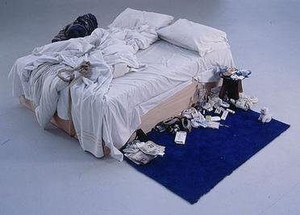

My Bed
Tracey Emin · 1998
In copyright. Look and learn: shown for study, not for download.
Emin first made this work in 1998, and it was shown at the Tate Gallery in 1999 as one of the works shortlisted for the Turner Prize, which it did not win. The idea came from a period when she had stayed in bed for four days without eating, and drinking nothing but alcohol. Two performance artists jumped on the bed and had a pillow fight for around fifteen minutes before security guards removed them. Charles Saatchi bought it for £150,000, and Christie's sold it in July 2014 for £2,546,500.